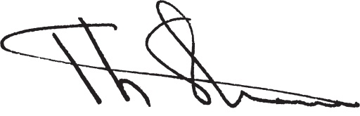
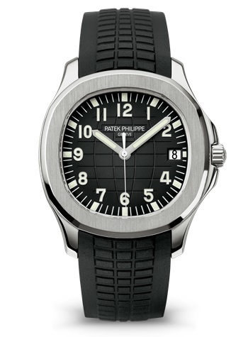
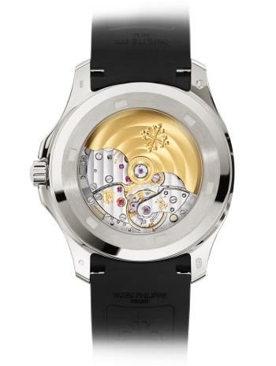
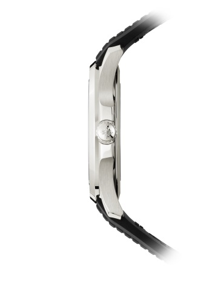

Will a Patek Philippe still be a Patek Philippe in 100 years?
"We have faith that each of the hundreds of parts in our watches will function well into the future. This commitment is my personal responsibility."
Thierry Stern,President 
“Had to find other ways to invest/ ‘Cause you rappers found every way to ruin Pateks”
-Pusha T feat.Rick Ross,Hard Piano
AQUANUT
Now comes my fav part of the article.
When launched in 1997, the Aquanaut created a sensation. It was young, modern and unexpected. Its case was a rounded octagon, inspired by that of the Nautilus. And it sported a “tropical” strap, made of a new composite material ultra-resistant to wear, salt water and uv radiation.
  WATCH
Self-winding mechanical movement.
Caliber 26‑330 S C.
Date.
Sweep seconds.DIAL
Black embossed dial.CASE
Stainless steel.
Screw down crown.
Sapphire crystal case back.
Water-resistant to 120 m.
Case diameter (10-4 o’clock): 40.8 mm.
Height: 8.1 mm.STRAP
“Tropical“ composite black strap.
Fold-over clasp.“You never really own a Patek Philippe. You simply look after it for the next generation”
New models of Aquanut coming in 4thof March.
S T A Y T U N E D